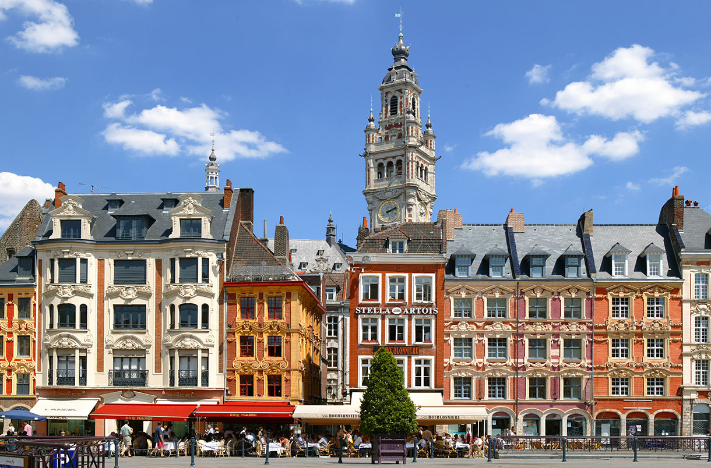
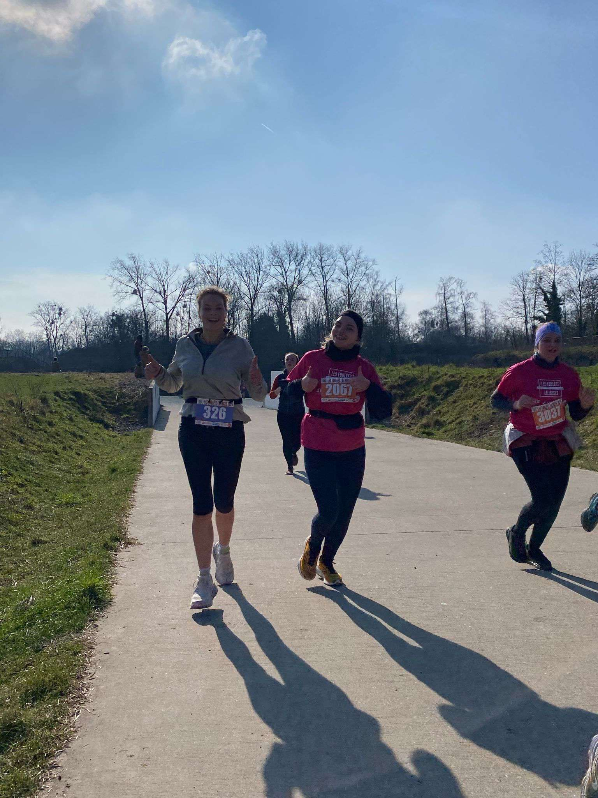

Faceel-it est née d'une conviction simple : le numérique se fait avec des humains. Depuis 2021, nous construisons une ESN où l'esprit d'équipe est le moteur de la performance.
Faceel-it est née en 2021 d'une envie : casser les codes d'un secteur souvent impersonnel, en remettant l'esprit d'équipe et l'épanouissement au centre. Cinq ans plus tard, nous sommes plus de 60, fidèles à cette promesse.
Notre force ? Une double compétence rare - l'excellence technique alliée à une compréhension fine des réalités métier - portée par un collectif qui avance dans la même direction.

Faceel-it, c'est d'abord trois associés qui ont voulu faire les choses autrement : bâtir une ESN où l'on prend soin des gens autant que des projets. Ils sont toujours aux commandes - accessibles, sur le terrain, à quelques mètres de chaque équipe.
Envie de les rencontrer ? On vous accueille autour d'un café à Wasquehal.
Développeuses, product managers, data scientists, experts cyber, équipe support… Derrière chaque projet, il y a de vraies personnes qui s'investissent. On grandit en gardant ce qui fait notre force : l'attention aux autres. Rejoignez-nous →
On gagne - et on apprend - ensemble. Toujours.
Le goût du travail bien fait et de l'impact réel.
Le respect et l'écoute comme socle des relations.
Envers nos clients, notre équipe et la planète.
Nos bureaux sont à Wasquehal, à deux pas de Lille. Nous croyons à un numérique de proximité : des équipes qui connaissent le territoire, ses acteurs et ses entreprises.
Travailler près de chez soi, sur des projets qui comptent pour la région - c'est aussi ça, la vie chez Faceel-it.

Course à pied, paintball, afterworks, séminaires, soirée des 5 ans : le collectif se vit autant en dehors du bureau qu'au travail.



Signataires de la Charte de la diversité, engagés dans la mobilité urbaine et membres de Numeum, nous structurons une filière numérique plus durable et plus inclusive.
Envie de faire partie de l'aventure Faceel-it ? Découvrez nos offres ou écrivez-nous directement.
Voir nos opportunités →